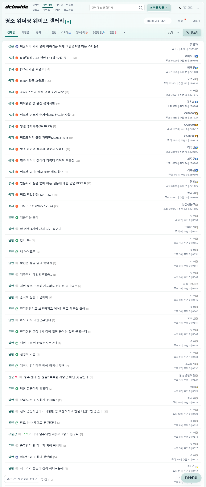

모바일 읽기부터 글쓰기까지.
목록·본문·댓글·글쓰기, 그리고 작은 팝업까지.
같은 톤으로 정돈한 화면을 이용하세요.

목록·본문·댓글·글쓰기, 그리고 작은 팝업까지.
같은 톤으로 정돈한 화면을 이용하세요.
디시인사이드의 익숙한 화면은 유지하고,
필터와 차단·관리 기능만 더합니다.
저장 전에 미리 보고, 마음에 들면 적용하세요.
PC에서는 필터가 만든 버튼과 팝업에만 적용됩니다.
원하는 버전 하나를 선택하세요. 같은 페이지에서 두 스크립트를 함께 켜지 마세요.
확장 프로그램을 지원하는 브라우저에서
Tampermonkey의 도구 → Import from URL에 설치 링크를 붙여넣으세요.
원래 사이트의 화면을 유지하고 싶다면
PC 버전은 필터와 자체 메뉴만 추가합니다. 원래 목록·본문·글쓰기 디자인은 유지됩니다.
우회 IP의 공격적 차단은 오탐 가능성이 있습니다. 설정과 차단 목록은 스크립트별로 보관되며, 다른 브라우저·기기와 자동 동기화되지 않습니다.